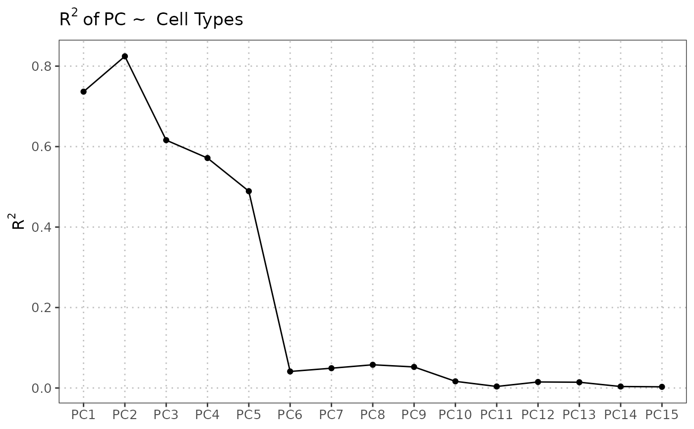
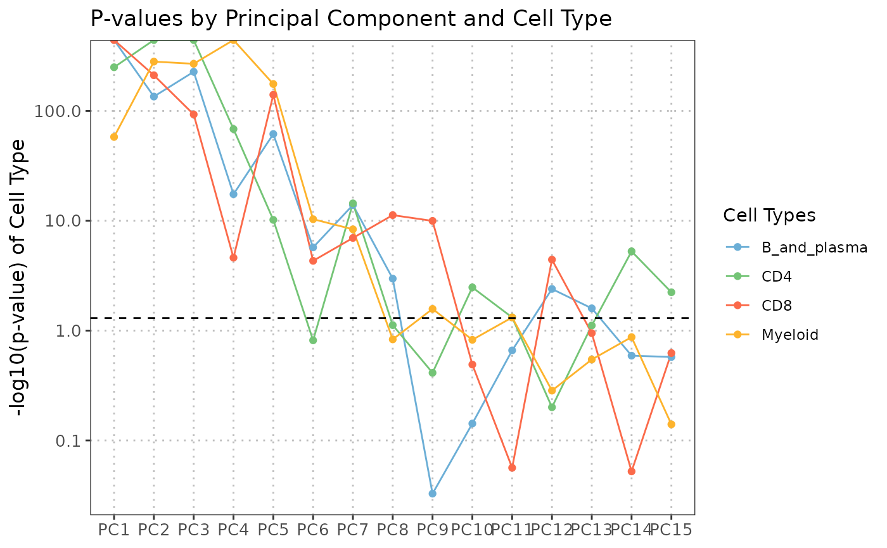
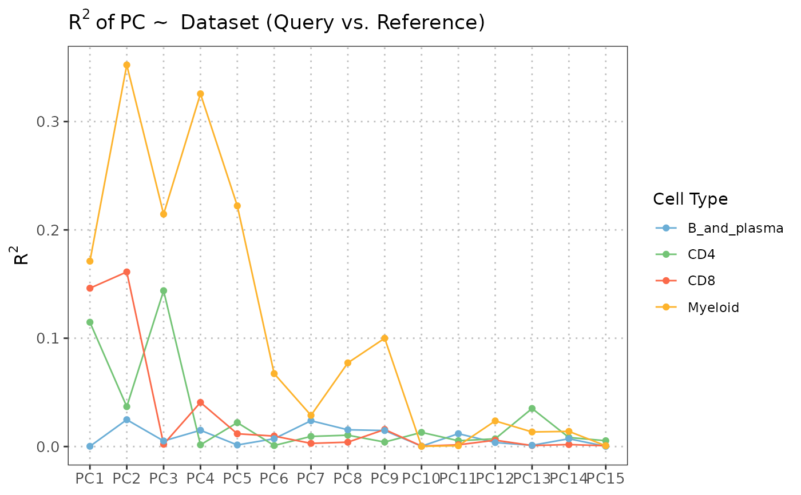
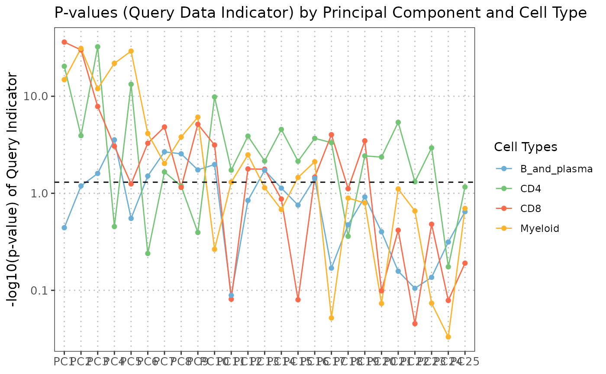
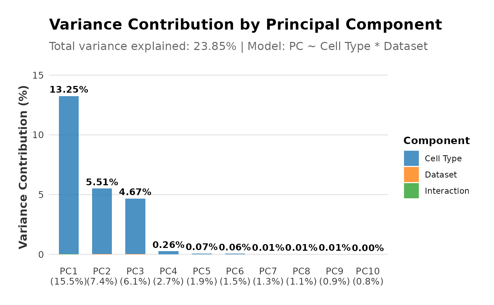
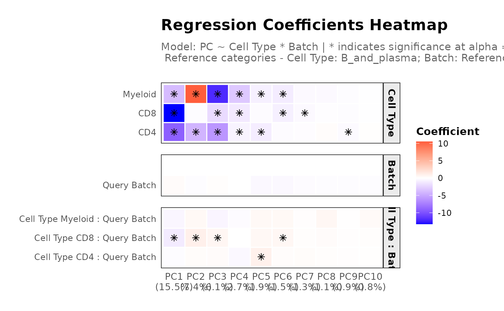

Plot Regression Results on Principal Components
Source:R/plot.regressPCObject.R, R/regressPC.R
regressPC.RdThe S3 plot method generates plots to visualize the results of regression analyses performed on principal components (PCs) against cell types, datasets, or their interactions.
This function performs linear regression of a covariate of interest onto one
or more principal components, based on the data in a SingleCellExperiment
object.
Usage
# S3 method for class 'regressPCObject'
plot(
x,
plot_type = c("r_squared", "variance_contribution", "coefficient_heatmap"),
alpha = 0.05,
coefficients_include = NULL,
...
)
regressPC(
query_data,
reference_data = NULL,
query_cell_type_col,
ref_cell_type_col = NULL,
query_batch_col = NULL,
cell_types = NULL,
pc_subset = 1:10,
adjust_method = c("BH", "holm", "hochberg", "hommel", "bonferroni", "BY", "fdr",
"none"),
assay_name = "logcounts",
max_cells_ref = 5000,
max_cells_query = 5000
)Arguments
- x
An object of class
regressPCObjectcontaining the output of theregressPCfunction.- plot_type
Type of plot to generate. Available options: "r_squared", "variance_contribution", "coefficient_heatmap".
- alpha
Significance threshold for p-values. Default is 0.05.
- coefficients_include
Character vector specifying which coefficient types to include in the coefficient heatmap. Options are
c("cell_type", "batch", "interaction"). Default isNULL, which includes all available coefficient types. Only applies toplot_type = "coefficient_heatmap".- ...
Additional arguments to be passed to the plotting functions.
- query_data
A
SingleCellExperimentobject containing numeric expression matrix for the query cells.- reference_data
A
SingleCellExperimentobject containing numeric expression matrix for the reference cells. If NULL, the PC scores are regressed against the cell types of the query data.- query_cell_type_col
The column name in the
colDataofquery_datathat identifies the cell types.- ref_cell_type_col
The column name in the
colDataofreference_datathat identifies the cell types.- query_batch_col
The column name in the
colDataofquery_datathat identifies the batch or sample. If provided, performs interaction analysis with cell types. Default is NULL.- cell_types
A character vector specifying the cell types to include in the analysis. If NULL, all cell types are included.
- pc_subset
A numeric vector specifying which principal components to include in the analysis. Default is PC1 to PC10.
- adjust_method
A character string specifying the method to adjust the p-values. Options include "BH", "holm", "hochberg", "hommel", "bonferroni", "BY", "fdr", or "none". Default is "BH" (Benjamini-Hochberg).
- assay_name
Name of the assay on which to perform computations. Default is "logcounts".
- max_cells_ref
Maximum number of reference cells to retain after cell type filtering. If NULL, no downsampling of reference cells is performed. Default is 5000.
- max_cells_query
Maximum number of query cells to retain after cell type filtering. If NULL, no downsampling of query cells is performed. Default is 5000.
Value
The S3 plot method returns a ggplot object representing the specified plot type.
A list containing
summaries of the linear regression models for each specified principal component,
the corresponding R-squared (R2) values,
the variance contributions for each principal component, and
the total variance explained.
Details
Principal component regression, derived from PCA, can be used to quantify the variance explained by a covariate of interest. Applications for single-cell analysis include quantification of batch effects, assessing clustering homogeneity, and evaluating alignment of query and reference datasets in cell type annotation settings.
The function supports multiple regression scenarios:
Query only, no batch: PC cell_type
Query only, with batch: PC cell_type * batch
Query + Reference, no batch: PC cell_type * dataset
Query + Reference, with batch: PC cell_type * batch (where batch includes Reference)
When batch information is provided with reference data, batches are labeled as "Reference" for reference data and "Query_BatchName" for query batches, with Reference set as the first factor level for interpretation.
References
Luecken et al. Benchmarking atlas-level data integration in single-cell genomics. Nature Methods, 19:41-50, 2022.
Author
Anthony Christidis, anthony-alexander_christidis@hms.harvard.edu
Examples
# Load data
data("reference_data")
data("query_data")
# Query only analysis
regress_res <- regressPC(query_data = query_data,
query_cell_type_col = "expert_annotation",
cell_types = c("CD4", "CD8", "B_and_plasma", "Myeloid"),
pc_subset = 1:10)
# Visualize results
plot(regress_res, plot_type = "r_squared")

plot(regress_res, plot_type = "variance_contribution")

plot(regress_res, plot_type = "coefficient_heatmap")

# Query + Reference analysis
regress_res <- regressPC(query_data = query_data,
reference_data = reference_data,
query_cell_type_col = "SingleR_annotation",
ref_cell_type_col = "expert_annotation",
cell_types = c("CD4", "CD8", "B_and_plasma", "Myeloid"),
pc_subset = 1:10)
# Visualize results
plot(regress_res, plot_type = "r_squared")

plot(regress_res, plot_type = "variance_contribution")

plot(regress_res, plot_type = "coefficient_heatmap")
